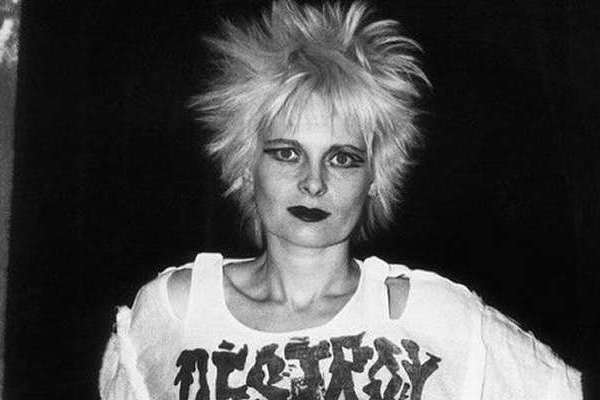
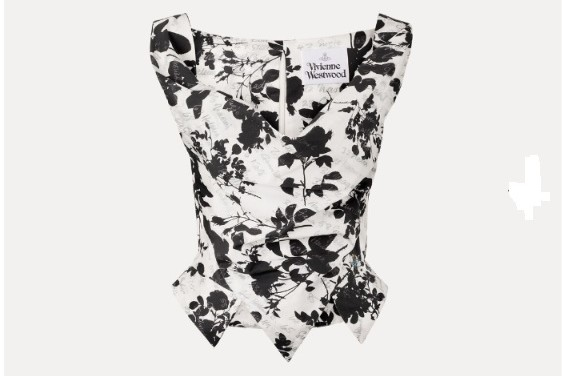
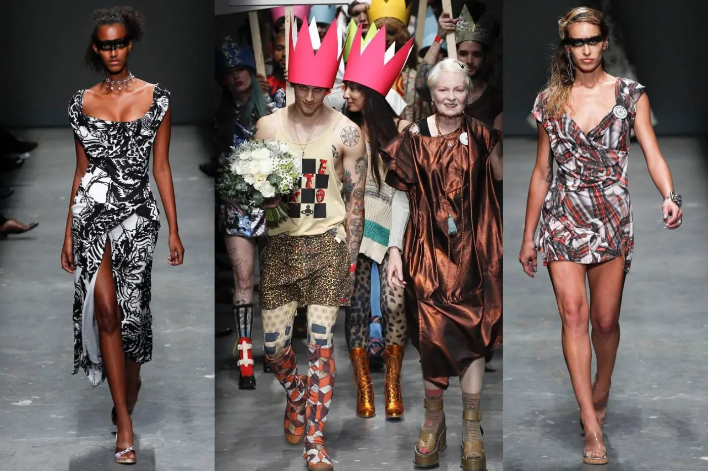
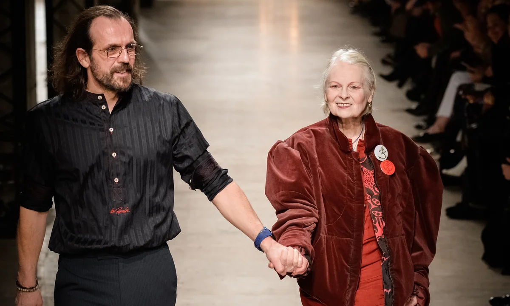

Historia
Vivienne Westwood fue una diseñadora británica clave que revolucionó la moda al crear la estética del movimiento punk en los años 70 junto a Malcolm McLaren desde su tienda en King’s Road. En las décadas siguientes, transformó la alta costura rescatando y reinterpretando elementos históricos como corsés, polisones y tartanes escoceses. Su marca se convirtió en un sinónimo de vanguardia, irreverencia y provocación en las pasarelas internacionales. Además, utilizó su plataforma global como un altavoz constante para el activismo medioambiental y la lucha contra el cambio climático. Antes de su fallecimiento en 2022, logró mantener la independencia absoluta de su firma de moda. Su legado perdura como un símbolo eterno de rebeldía, creatividad sin concesiones y conciencia social aplicada al diseño textil británico.

Ropa Comercial
Su catálogo incluye camisas de draperies asimétricas, prendas de punto y pantalones de talle alto con gran influencia británica. El icónico estampado de tartán escocés destaca en chaquetas, faldas y vestidos de su colección prêt-à-porter más accesible. También incorpora detalles históricos sutiles como cuellos exagerados, corsés integrados y el clásico logotipo del orbe. A pesar de su marcada excentricidad creativa, ofrece piezas versátiles que priorizan la elegancia funcional para el día a día. Muchas de estas prendas se diseñan buscando un equilibrio entre la vanguardia urbana y la comodidad duradera. La marca mantiene un firme compromiso con la sostenibilidad, apostando por materiales de alta calidad y un consumo consciente. De este modo, permite lucir un estilo transgresor, sofisticado y atemporal sin perder la portabilidad urbana.

Alta Costura
Las colecciones de alta costura y pasarela de Vivienne Westwood representan la máxima expresión de su genio creativo y su ruptura con los moldes establecidos. Sus diseños de alta gama desafían constantemente las proporciones tradicionales mediante siluetas teatrales, volúmenes exagerados y estructuras vanguardistas. Son famosas sus reinterpretaciones extremas de la indumentaria histórica, como miriñaques, corsés rígidos y polisones del siglo XVIII adaptados al siglo XXI. Utiliza de forma magistral los tartanes escoceses tradicionales, las sedas lujosas y los drapeados intrincados que evocan la pintura clásica. Cada desfile funciona como una plataforma de activismo político y social, integrando mensajes medioambientales en piezas únicas hechas a mano.

Diseñador Actual
El diseñador actual de la marca es el austríaco Andreas Kronthaler, director creativo y viudo de Vivienne Westwood. Se conocieron en 1988 y desde entonces fueron compañeros de vida y creación. En 2016, la línea principal pasó a llamarse Andreas Kronthaler for Vivienne Westwood. Su estilo combina referencias históricas con una visión moderna, provocadora y teatral. Mantiene el legado de Westwood mediante diseños de género fluido y una gran sastrería. Sus colecciones incluyen homenajes a la vida y archivos de la fundadora. También incorpora elementos innovadores que mantienen la marca actual y reconocida mundialmente. Su trabajo refleja la evolución de la moda sin perder la identidad original de la firma. Así, logra conservar la esencia transgresora, activista e inconfundible de la marca.